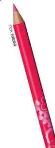
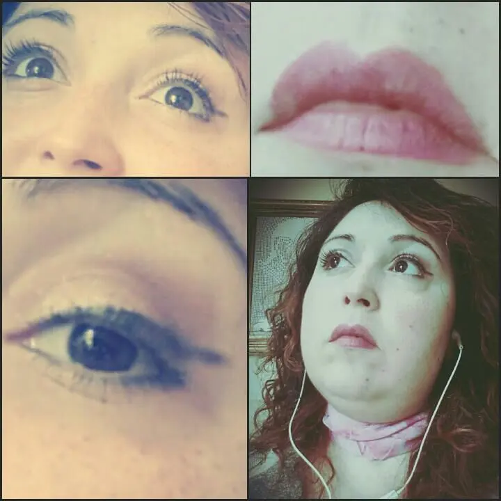

Avon amore per te.. matita labbra Pink
Ciaooooo ragazzeeeee.
Buon inizio settimana a tutti. . sole, caldo e granite ihihih si inizia sempre così no? qualcuno questa domenica è già stato al mare .. avete fatto benissimo. .
Io invece ancora nada e infatti sono qui per parlare di altri make up e non di sole, mare e tintarella. .vabbė se proprio dobbiamo dirla tutta nemmeno mi interessa la tintarella, mi piace avere la pelle chiara. .
E nell'Ottocento infatti la pelle chiara è segno di nobiltà ed è anche più sexy e quindiiiiiii....noi cerchiamo di essere entrambe le cose ahahah
Tornando ai make up oggi voglio mostrarvi una matita Avon della linea 'color trend' tonalità Pink che ho indossato, e non smetto di indossare ultimamente..
La matita in questione è questa:

Ragazze cioè WOW l'unica espressione che so fare. . cremosa al punto giusto, contorno labbra in modo perfetto, colora tutte le labbra senza molta pressione e la durata è ottima..ieri l'ho tenuta per tutto il pomeriggio e sono arrivata a sera che ce l'avevo ancora su..fin quando non ho poi cenato e ovviamente è andata via...
Questa linea ovvero la COLOR TREND è una linea economica che punta molto sui colori chiari e giovanili.. io mi ci trovo benissimo. .Questa linea di matite ha anche altri colori che al momento non trovo la foTo ma via via cercherò di prenderle tutti i colori. .Questo è il mio make up e le mie labbra. .
